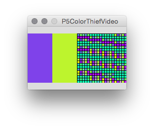
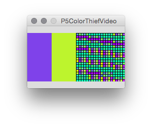

P5ColorThief
A library by Fabian MorÌ?n Zirfas for the Processing programming environment.
Last update, 05/29/2015.
Extract dominant colors from images.
A wrapper for the great ColorThief library. It allows to extract color palettes from an PImage.
Feel free to replace this paragraph with a description of the library.
Contributed libraries are developed, documented, and maintained by members of the Processing community. Further directions are included with each library. For feedback and support, please post to the Discourse. We strongly encourage all libraries to be open source, but not all of them are.
Download
Download P5ColorThief version 1.0.1 (1) in .zip format.
Installation
Unzip and put the extracted P5ColorThief folder into the libraries folder of your Processing sketches. Reference and examples are included in the P5ColorThief folder.
Keywords. Color, Palette
Reference. Have a look at the javadoc reference here. A copy of the reference is included in the .zip as well.
Source. The source code of P5ColorThief is available at GitHub, and its repository can be browsed here.
Examples
Find a list of examples in the current distribution of P5ColorThief, or have a look at them by following the links below.
Tested
Platform osx
Processing 2.2.1
Dependencies none